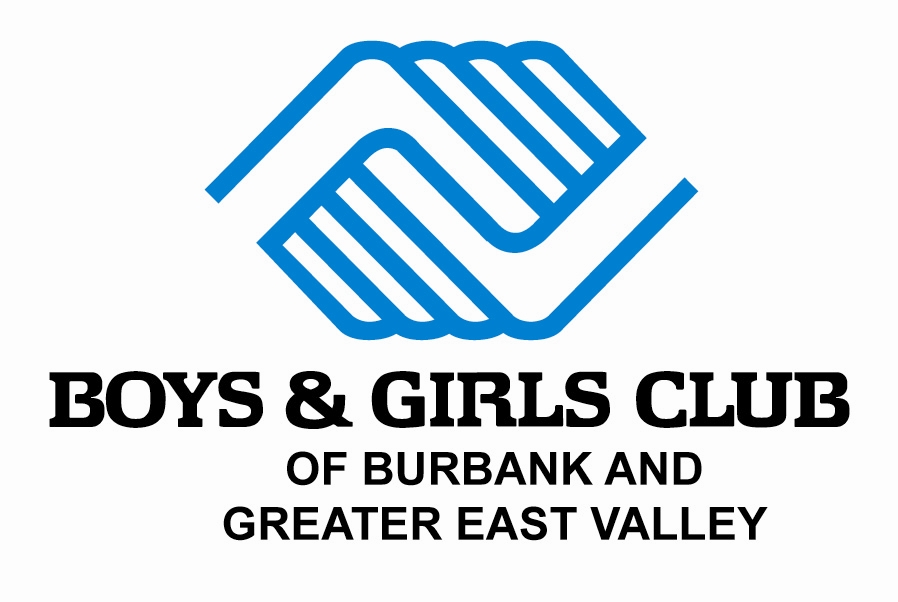
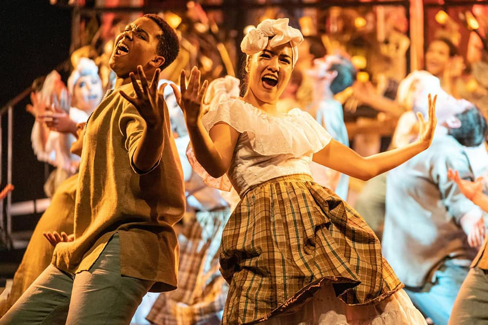

Amanda Kang
Hello! My name is Amanda Kang and I am currently a first year attending the University of California, Riverside. I intend of graduating UC Riverside with a Bachelor's of Science in Business Administration with an emphasis on Management. I also am minoring in the language of Spanish to further my repertoire and broaden my lingual skills. Although I am majoring in business, I am also emerged in various life and physical science courses. Post undergrad, I am invested in attending a dentistry school and becoming an orthodontist. The business major will help me learn the other aspect of running my own business and I would be able to own my own offices.
In high school, I was involved with a ton of volunteer work and tried to involve myself in the community as much as I can. To start off, I became a volunteer at the Boys and Girls Club of Burbank and Greater East Valley. I was given the chance to work around children and teens at this non-profit after school program. I was responsible of engaging with the children by participating in programs, such as "Power Hour", where children worked on their homework and I offered tutoring to those in need. From numerous subjects, such as math and history, I helped members understand certain topics in which they are having difficulty with. I also dealt with registration of students and it involved me working of business application suites, such as Microsoft Word and Excel. Besides volunteering at the main club, I also volunteered at various events that the Boys and Girls Club attended, such as the 2015 Special Olympics World Summer Games and other community service projects. For example, I particpated in beach cleans ups and helped organize food drives. During the last year of high school, I participated in the debate team, Junior State of America. This student-run organization focuses on teaching teens the responsibility of civic duty and engagement, the importance of fighting agaisnt apathy, and valuable leadership skills. I had the opportunity of holding the position of Vice President of Publicity for my school's chapter. My role was to publicize the events we were holding, such as conventions and service projects. To publicize, I learned how to graphically create flyers and work with different editing softwares. I worked alongside the president of publicity of spreading the word of our events and involve more students to participate in JSA activities. With these few volunteer experiences I have briefly mentioned, I have been deeply involved with my community and have gained countless skills that will retain with me for my career.
Currently, I am trying to obtain a challenging position as a business administration assistant or acquire an internship that submerges me in the business world. With either a job or internship, the experience would broaden my horizons and give me a better understanding of the field I am pursuing into. Given the chance to witness how leaders manage their businesses would be a great experience and opportunity.
Experience
Volunteer
• Using resourceful leadership skills, I was given tasks to help guide the children.
• I tutored the members at the club and offered my free time by assisting these students.
• Experience with office work as well, dealed with regustration. Expertise in Microsoft Word and Excel.
Vice President of Publicity
• Post on social media platforms about upcoming events, such as debates, conventions, and fundraisers.
• To raise awareness for the fight against apathy.
• Create posters and flyers for the events and spread them around to circulate the chapter's agenda.
Vocal Music Association Dance Captain
• Responsible of leading warm-ups and taking the responsibility of leading rehearsals outside of practice.
• I helped my fellow classmates review choreography and prepare them for auditions.
• Created a workout program within the VMA and I taught the members how to properly exercise.
• Assisted the directors and helped them envision their ideas.
Education
University of California Riverside
Portfolio

